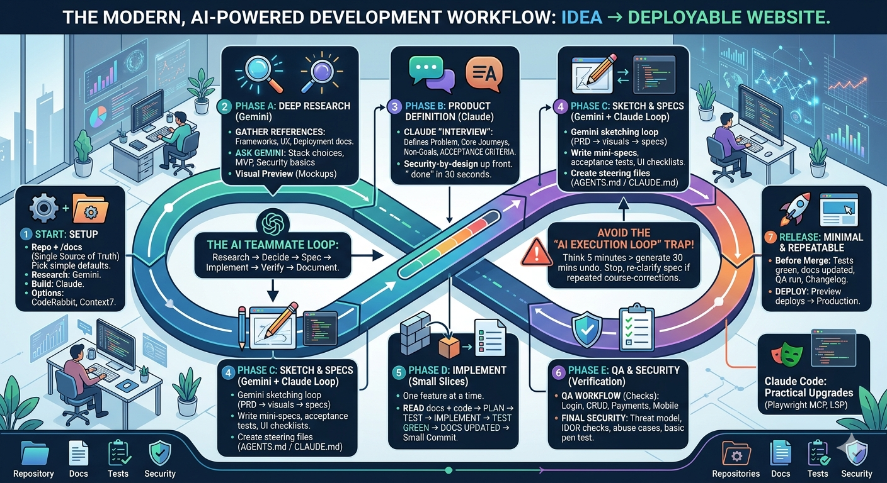

Goal
Go from idea → spec → implementation → tested, documented, and deployable website/project, while using AI as a teammate.
Quick start (TL;DR)
- Create repo +
/docs(single source of truth)- Do a Research brief (Gemini) + quick visual preview for direction
- Do a PRD interview (Claude) → write acceptance criteria
- Turn PRD into mini-specs + acceptance tests
- Draft short
AGENTS.md/CLAUDE.md(commands, guardrails, conventions)- Implement one slice → tests green → docs updated → small commit
- Automate checks: Playwright MCP for flows, and enable LSP for reliable refactors
- Do security at the end, but not only: consider security when making the plan and do a final security verification pass on critical flows before shipping
Avoid the "AI execution loop" trap
AI is great at executing, but it can also help you move quickly in the wrong direction.
- Pause after research/PRD and make sure the target is correct.
- If you notice repeated course-corrections, stop and re-clarify the spec and acceptance criteria, or at least define better what you want. You can come back to it later.
- It is often faster to think for 5 minutes than to generate 30 minutes of edits you later undo.
- Have regular commits and do experiment in branches.
- Important: AI is always better with the lowest context possible. That means new sessions and compacts whenever possible.
- Finally, this is a hammer, don’t use it for a non important pet project, use it for what matters, and get involved in it or you won’t learn. AI isn’t free.
How to use this guide
Run this loop per feature: Research → Decide → Spec → Implement → Verify → Document.
- Keep tasks small and testable. Avoid “build everything” prompts.
- Prefer one source of truth: your repo +
/docs.
For beginners with claude code or the like: https://www.reddit.com/r/ClaudeAI/comments/1r66oo0/how_i_structure_claude_code_projects_claudemd/
It’s more of a prototype than a deployable website realistically.

0) Setup (10–20 min)
Outcome
A repo that is easy for both humans and AI to navigate.
- One repo + one docs folder
- Create a repo (GitHub) and a
/docsfolder.
- Create a repo (GitHub) and a
- Pick your tools (simple defaults)
- Research model: Gemini (or Perplexity) for broad reading + synthesis.
- Build model: Claude (Opus/Sonnet) for PRDs/specs + code changes.
- Optional: CodeRabbit for automated code review.
- Optional: Context7 MCP if you need better framework/library retrieval.
1) Phase A — Deep research (Gemini)
Output
A short “Research brief” you can paste into your PRD.
- Gather references:
- Official framework docs (Next.js, Vite, etc.)
- Design + UX references
- Deployment docs (Vercel, Netlify, Fly.io)
- Ask for:
- recommended stack choices for beginners
- security and reliability basics
- a first-release scope (MVP)
- Visual preview (fast UX feedback)
- Use Gemini image preview (or any “render UI from description” feature) to quickly see how a page could look before you build it.
- Treat previews as directional mockups. Validate in the real UI once implemented.
2) Phase B — Product definition (Claude “interview mode”)
Output
A PRD that a junior dev (or AI) could implement without guessing.
PRD review note
A PRD benefits from review by an experienced senior software developer who can spot missing edge cases and non-functional requirements early.
Don’t leave security for the end: use the PRD to capture security and abuse cases up front, not after implementation.
Ask Claude to:
- interview you with questions until requirements are clear
- define:
- target user
- problem statement
- core user journeys
- non-goals
- acceptance criteria (what “done” means)
- MVP scope vs later
PRD quality check
If you cannot tell whether a feature is “done” in 30 seconds, the acceptance criteria is not specific enough.
3) Phase C — Turn PRD into sketch + specs + tasks
Output
Specs that are easy for AI (and humans) to implement.
Gemini sketching loop (PRD → visual direction → back to spec)
Use this when you want quick UI direction before implementation.
- Ask Claude to generate a “Gemini sketch prompt pack” from the PRD
- Include:
- a single-page screen description (what the user sees)
- key components and hierarchy
- do / don’t list
- reference sites and what to borrow from each
- Include:
- Paste the pack into Gemini (image / UI preview) and request a sketch
- Prompt: “Generate 2–3 UI sketches (or variants) based on the pack. Keep them simple and directional.”
- Tell Gemini what to change visually (iterate once or twice)
- Use concrete deltas:
- “Make the primary action more prominent and move it above the fold.”
- “Reduce visual density. Increase spacing and simplify the sidebar.”
- “Use a calmer color palette and higher contrast for text.”
- “Make mobile layout first-class: sticky bottom CTA, single-column.”
- Use concrete deltas:
- Bring the output back to Claude
- Provide:
- the chosen sketch (or a description)
- what you liked and disliked
- final visual decisions (layout, navigation, component list)
- Ask Claude to update:
- the mini-spec
- acceptance criteria (including responsive + accessibility)
- a UI checklist for QA
- Provide:
Treat Gemini outputs as directional mockups. The "hand-off" back to Claude is where you lock decisions into specs and tests.
Then, for each feature, ask claude to:
- write a mini-spec (inputs, outputs, edge cases)
- define acceptance tests (what should work from a user’s perspective)
- add UI/UX references: paste 2–5 example websites whose look/UX you want, then tell the AI what to keep and what to change (“make it like X, but change Y/Z”)
- prefer existing libraries and framework primitives
- make a checklist that you instruct it to refer to in the claude.md
Security by design (lightweight)
For every feature, explicitly answer:
- Who can do this action? (authn/authz)
- What inputs exist? (validation)
- What could be abused? (rate limiting, spam, cost controls)
- What data is sensitive? (logs, telemetry, PII)
Note: you can add an extra phase of asking claude for specific deep research prompt to review the current plan. The best initial code, the better the code will be as the AI will see the patterns you’re using and copy them. It’s also much easier to make the right choices initially (avoiding outdated libraries and such) than later on.
4) Create your steering files (keep the AI consistent)
Purpose
Reduce confusion and prevent repeated mistakes. Not a repo encyclopedia.
When to add AGENTS.md / CLAUDE.md
- Add them after Phase B (PRD), when decisions are real.
- Keep them short and stable.
High-signal content (recommended)
- Setup commands (install, lint, typecheck, tests)
- Guardrails (do-not-touch areas, ask-before actions)
- Conventions (file placement, naming, patterns unique to this repo)
- Known pitfalls (top 3 mistakes you see repeatedly)
Low-signal content (usually harmful)
- long architecture essays
- folder-by-folder inventories
- outdated rules or “legacy tech” you rarely use
Note on context management
Rule of thumb: every word you add is something the model can get distracted by.
- Start new sessions when switching to a new feature.
- Keep steering files focused on non-obvious constraints.
- If guidance is wrong or outdated, it can actively steer the model into the wrong parts of the codebase.
If you want the long-form explanation and examples, watch this video:
Delete your CLAUDE.md (and your AGENT.md too)
AGENTS.md (build rules)
This file is added to every prompt you send to the LLM. Use it wisely.
- Documentation-first: for every meaningful feature/component/section (depending on maturity), update
/docswith usage and examples. - Spec/test-driven: create or adjust a spec, add tests, then implement.
- Always run tests at the end of each slice.
- Commits: prepare good, small commits with clear messages (but do not push).
- If something in the repo is surprising, flag it to the human and add it under Known pitfalls.
Tip: keep a
/docs/agents.mdindex that lists what docs exist and what they cover.
5) Phase D — Implement in small slices
Rule
One feature at a time. Every slice must end in a verifiable state.
For each slice:
- Read current
/docs+ relevant code. - Propose a plan + file list.
- Write/update tests.
- Implement.
- Run tests and report results.
- Update docs.
- Prepare a commit message.
6) QA workflow (browser-based, beginner friendly)
Goal
Define user interactions once, then reuse them for regression testing.
- Maintain a checklist of critical flows:
- sign up / login (if applicable)
- core actions (create/edit/delete)
- payments (if applicable)
- settings / profile
- mobile layout checks
- Use a browser extension workflow to:
- execute the checklist
- record issues as reproducible steps
- rerun after each change
7) Release workflow (minimal and repeatable)
Goal
Reduce “it works on my machine” and ship confidently.
- Before merging:
- tests green
- docs updated
- QA checklist run
- changelog notes (optional)
- Deploy:
- start with preview deploys per PR
- then promote to production
8) Beginner guardrails (avoid common AI mistakes)
Avoid the "AI execution loop" trap
AI is great at executing, but it can also help you move quickly in the wrong direction.
- Pause after research/PRD and make sure the target is correct.
- If you notice repeated course-corrections, stop and re-clarify the spec and acceptance criteria.
- It is often faster to think for 5 minutes than to generate 30 minutes of edits you later undo.
- Treat AI like a junior dev: always review diffs and results.
- Keep prompts specific. One outcome per prompt.
- When something breaks, ask for:
- suspected root cause
- minimal fix
- how to prevent regressions (tests)
Claude Code (when you want an agent that edits files and runs commands)
Where it fits
Phase C → Phase D, once specs and tests are clear.
Claude Code is an agentic coding tool that reads your codebase, edits files, runs commands, and integrates with your dev tools.1(http://claude.md)
Practical upgrades to add to your stack
- Playwright MCP (automated browser testing)
- Use Playwright via MCP to let the AI exercise the product like a user based on your acceptance criteria.
- Pattern: write acceptance tests in plain language → map them to Playwright flows → run them on every slice.
- Keep tests aligned with the checklist from Phase 6.
- LSP (better code navigation + edits)
- Claude Code is much more reliable when it can use language-server signals (symbols, go-to-definition, references).
- Read: The 2-Minute Claude Code Upgrade You’re Probably Missing: LSP
Security baseline for agentic coding (keep it simple)
- Treat MCP servers, hooks, and “run commands” as production-power tools. Only enable what you actually need.
- Secrets: keep them out of prompts and out of the repo. Prefer
.envfiles not committed, and short-lived tokens when possible. - Least privilege: scope credentials to the minimum permissions and the minimum environment (dev vs prod).
- Verify before merging: require tests + lint + typecheck, and add at least a lightweight security pass on auth/input handling.
- Review diffs: never auto-merge large changes you did not understand.
Deep-dive references
Typical Claude Opus flow (per new feature)
How using claude optimally looks
- Prefer a new chat/session per feature unless they’re related, then you can compact it.
- Use the claude superpowers plugin. Go into plan mode if you know what you want already, otherwise use the brainstorm skill. Tell it what you want.
- Review the plan. REVIEW IT.
- Claude may forget to test it and add new tests for it with playwright plugin (for the frontend) and other testing methods (more static for the backend). Ask it to add it. Ask it to commit it.
- That’s all.
9) Final security verification (critical flows)
Goal
Catch security flaws before release, especially in auth, data access, and payments.
If you leave security for later, it’ll come for you.
Software always had bugs and exploits, because people don’t think about edge cases.
And now we spend way less time thinking about them than before, and hacking is made easy once more thanks to AI being used for hacking.
How to do it (practical and lightweight):
- Pick the critical flows (at minimum): sign up, login, password reset, account settings, core create/edit/delete actions, and any admin actions. Add payments if relevant.
- Ask someone preferably new to the project to run the checks with a security mindset. Fresh eyes catch assumptions and missing authorization rules.
- Use AI to speed up reasoning and test design, but keep the tone grounded: the aim is to verify, not “prove you are secure.”
AI prompt pack (copy/paste):
- Threat model the flow:
- “Here is the description of the flow and the main endpoints. List likely abuse cases and security failures. Prioritize by impact and probability. Keep it to 10 items.”
- Authorization checks (IDOR / broken access control):
- “Given this endpoint and response shape, propose the fastest tests to confirm whether one user can access another user’s data. Include 5 concrete request variations.”
- Business-logic abuse:
- “For this multi-step flow, list ways an attacker could skip steps, replay requests, race requests, or manipulate state. Give specific test steps.”
- Input validation & injection hotspots:
- “Given these parameters, identify where injection is plausible (SQL/NoSQL, template injection, command injection). Propose 3 targeted payloads per likely sink, not a broad scan.”
- Session/cookie/JWT sanity check:
- “Given this auth approach, list the top configuration mistakes and how to verify each quickly (cookies flags, token expiry, logout invalidation, refresh flow).”
At least basic pentesting:
Even with good PRDs and automated checks, it is worth doing at least a basic penetration test before a serious launch (internally or externally). All software have bugs and exploits, even the biggest. The only way to know is to test.
Our page talks further about this reality and the different options to choose from to be more secure:
https://ingram.tech/services/penetration-testing
Online references (good starting points)
Use these when you want to go deeper. The guide above is designed to work without them.
- How to effectively write quality code with AI
- AGENTS.md outperforms skills in our agent evals - Vercel
npx @next/codemod@canary agents-md- https://github.com/nicolasahar/morphic-programming/blob/main/morphic_programming_manual_v1.md
- Compherensive Vibe Stack
- Beginner workflow from PRD to code with AI
- AI-first development field guide (process + mindset)
- Claude Code guide (CLAUDE.md patterns, review diffs, context management)
- AI coding workflow roadmap ideas (task-level prompting, greenfield vs existing)
- Kiro “steering files + specs + hooks + MCP” concept
MCP servers: